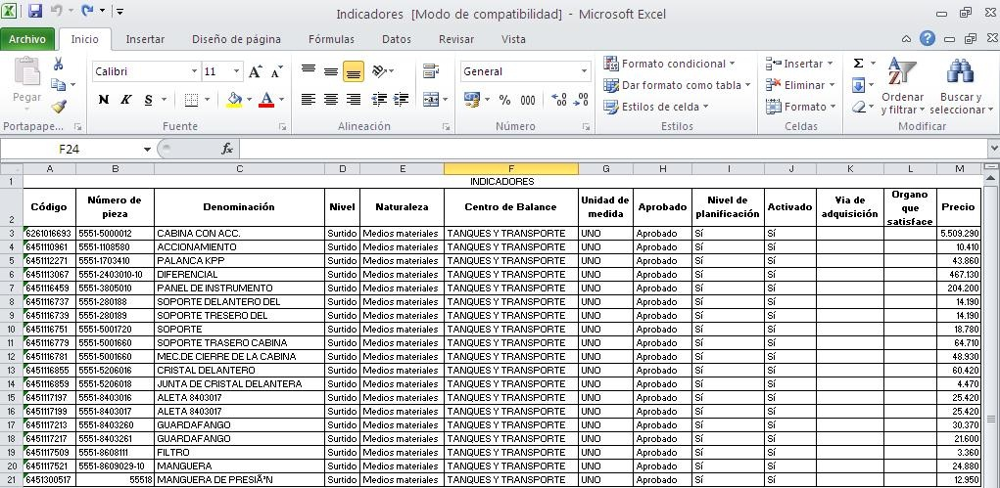
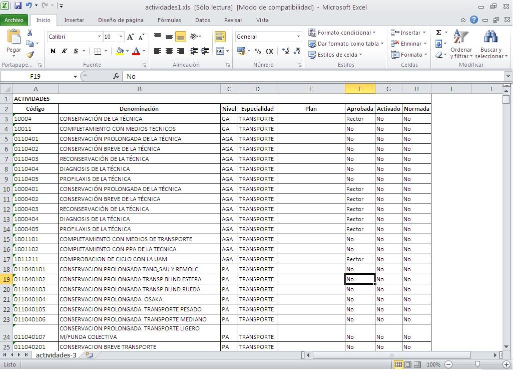
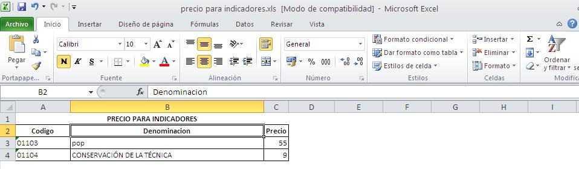
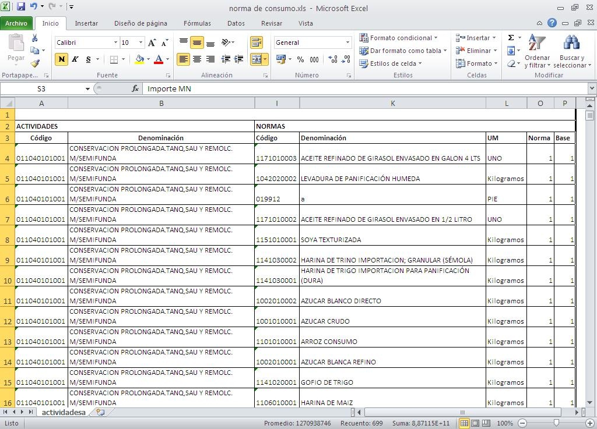
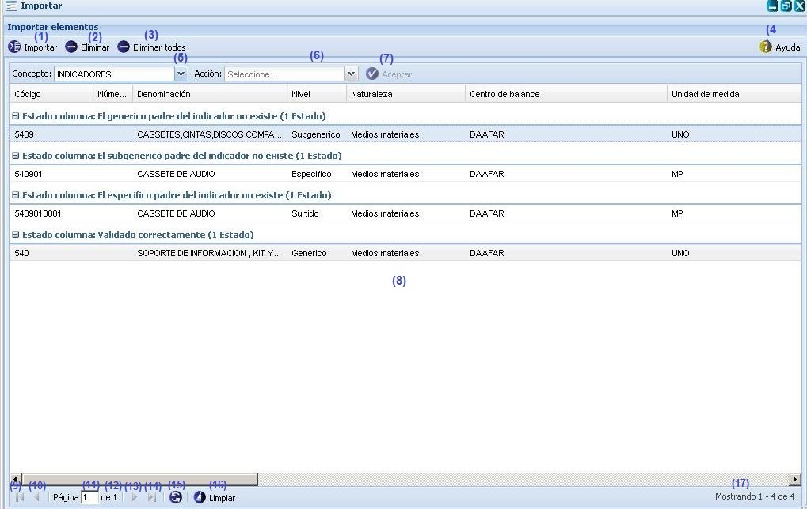
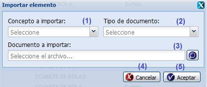

--Importar--
Para poder importar un documento debe ser un Excel 2003 y debe tener una estructura determinada en dependencia de lo que se quiera importar:
Por ejemplo para importar un Excel con indicadores este debe cumplir con la estructura de columnas que se muestra en la figura 1.

Figura 1. Estructura del Excel para importar indicadores.
Para importar un Excel con actividades este debe cumplir con la estructura de columnas que se muestra en la figura 2.

|
Figura 2. Estructura del Excel para importar actividades.
Para importar un Excel con Precios para indicadores este debe cumplir con la estructura de columnas que se muestra en la figura 3.

Figura 3. Estructura del Excel para importar precio para indicadores
Para importar un Excel con Normas de consumo este debe cumplir con la estructura de columnas que se muestra en la figura 4.
 |
Figura 4. Estructura del Excel para importar precio para indicadores.
Acciones que se pueden realizar sobre la opción Importar
Después de tener confeccionados los documentos se procede a importar de la siguiente manera. Se accede a la funcionalidad a través de Inicio/Planificación material/Importar/Importar. Una vez seleccionada la funcionalidad Importar desde Excel, se muestra la interfaz correspondiente con las operaciones fundamentales a las que puede acceder el usuario, ver figura 5.
 |
Figura 5. Interfaz Importar.
Las diferentes opciones que conforman la Figura anterior permiten:
- Importar elemento, ver acápite Importar, el sistema mostrará una interfaz permitiendo seleccionar los conceptos, el tipo de documento y el documento que quiere importar, una vez seleccionado los datos mencionados anteriormente se debe presionar el botón Aceptar de la interfaz el sistema mostrará un mensaje de información notificando que se realizó la operación satisfactoriamente. Se puede acceder a esta interfaz de manera rápida con la combinación de las teclas (Ctrl + E).
- Eliminar elemento, se debe seleccionar el elemento que se desea eliminar y presionar el botón Eliminar, el sistema mostrará un mensaje de confirmación confirmando que si está seguro que quiere eliminar el elemento seleccionado, si presiona el botón Aceptar del mensaje de confirmación el sistema mostrará un mensaje de información notificando que se realizó la operación con éxito.
- Eliminar todos, se debe seleccionar un Concepto, opción 5 de la Figura 5, se presiona el botón Eliminar todos, opción (3) de la Figura 5, el sistema mostrará un mensaje de confirmación confirmando que si está seguro que quiere eliminar todos los elementos del concepto seleccionado, si presiona el botón Aceptar del mensaje de confirmación el sistema mostrará un mensaje de información notificando que se realizó la operación con éxito.
- Mostrar ayuda de la funcionalidad. Se puede acceder a esta interfaz de manera rápida con la combinación de las teclas (Alt + H).
- Seleccionar el concepto.
- Seleccionar la acción que se pueden realizar con la lista de elementos.
- Una vez seleccionado el concepto y la acción el botón Aceptar se habilitará, se debe presionar el botón Aceptar y el sistema mostrará un mensaje de información notificando que se realizó la acción satisfactoriamente. Si la acción no se ejecuta con todos los elementos el sistema muestra un mensaje de información notificando que los elementos que se muestran no fueron actualizados y si desea expórtalos a xls. Si se acepta el mensaje de información el sistema exporta a un documento xls los elementos.
- Listar los elementos importados.
- Ir a la primera página, mostrando las primeros elementos.
- Ir a la página anterior.
- Muestra el número de la página donde se encuentra, se puede introducir el número.
- Muestra el número máximo de páginas.
- Ir a la siguiente página.
- Ir a la última página.
- Actualizar el listado de elementos.
- Limpiar filtro(s). Esta acción limpiará todos los criterios de búsqueda, deshabilitando los filtros realizados. Se puede realizar esta operación seleccionando la combinación de teclas (Alt + L).
- Mostrar la cantidad de resultados encontrados.
Importar
Para importar elementos se debe presionar el botón Importar, opción (1) de la figura 5. Inmediatamente se mostrará una ventana donde se podrán introducir los datos necesarios para importar, ver figura 6.

Figura 6. Interfaz Importar elemento.
Las diferentes opciones que conforman la figura anterior permiten:
- Seleccionar el concepto a importar, estos son de tipo: Precio para indicadores, Indicadores, Actividades.
- Seleccionar el tipo de documento, este es de tipo: Microsoft Office Excel.
- Seleccionar el documento a importar, el sistema permite buscar el documento que se quiere importar en la PC.
- Cerrar la ventana sin importar los datos.
- Cerrar la ventana permitiendo importar los datos.